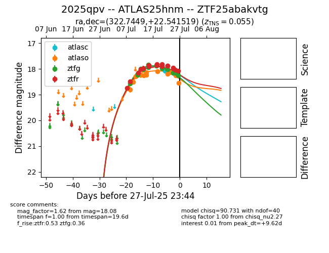

Target 2025qpv at 2025-08-06 02:07, see:
FINK: fink-portal.org/2025qpv
Lasair: lasair-ztf.lsst.ac.uk/objects/2025qpv
ALeRCE: alerce.online/object/2025qpv
TNS: wis-tns.org/object/2025qpv
YSE: ziggy.ucolick.org/yse/transient_detail/2025qpv
alt names
ZTF25abakvtg (ztf,fink)
2025qpv (tns,yse)
ATLAS25hnm (atlas)
coordinates:
equatorial (ra, dec) = (322.7449,+22.54152)
galactic (l, b) = (73.7089,-20.62835)
photometry
last atlasc=18.50, atlaso=18.78, ztfg=19.11, ztfr=18.56
3 atlasc, 15 atlaso, 21 ztfg, 23 ztfr detections
